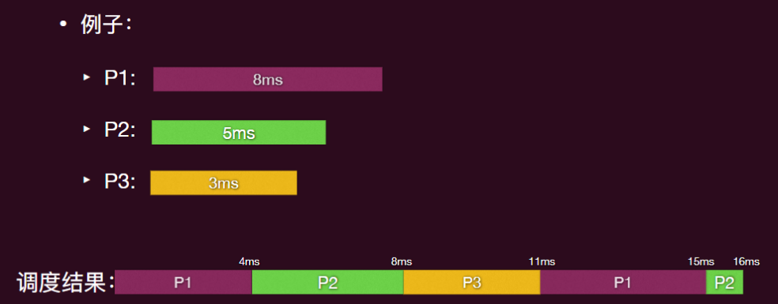

操作系统-10虚拟化-调度
调度：为了满足既定目标，对计算任务进行资源分配的行为。
调度指标：
- CPU 利用率 公平 吞吐量 周转时间 等待时间 响应时间
调度的时机
- CPU 回到操作系统的掌控之中
- 发生系统调用：比如 fork () exit ()
- 某个运行的进程阻塞了（⽐如 wait ⼦进程或者等待⼀个 I/O 完成）
- 发生中断，⽐如 I/O interrupt，clock interrupt
- 这些事件的发⽣都意味着系统的状态发⽣了变化，可能和既定的⽬标发⽣了偏离，需要调整（调度）来让系统往既定的⽬标靠近
机制与策略
- 操作系统中的⼀个重要设计思想：机制与策略的分离（Separation of mechanism and policy），这种设计是⼀个典型的模块化思想，可以有效降低系统的复杂度
- 策略：“可以做什么”
- 机制：“怎么做”
- 在⼀个已有的机制上，可以考虑的问题是，有哪些策略？有没有“最优”的策略？
- 在给定⼀个策略的基础上，可以考虑的问题是，实现这个策略需要什么样的机制？ 已有机制是否具备这个能⼒？实现效果是否⾼效？
调度策略
- 批处理任务的调度
- 交互性任务的调度
- 实时任务的调度
批处理任务的调度
先来先服务 First Come First Serve FCFS
按照到达系统（就绪）的先后顺序进行调度，也叫先进先出
护航效应：短运⾏时间的进程排在⻓运⾏时间的后⾯，导致平均等待时间过⻓的现象。
最短任务优先 Shortest Job First SJF
- 将每个任务与其需要运行时间关联
- 需要运行时间最短的优先被调度
命题：就平均等待时间而言，SJF 是最优的
给定：有 个进程， 是进程 k 的执行时间， 是进程 k 的等待时间
证明思路
- 给定⼀任意进程排列顺序的平均等待时间
- 给出⼀个给出将该序列变为按执⾏时间降序排列的过程
- 证明该过程是单调的，即每⼀步都会导致平均等待时间变⻓
冒泡排序：
调换顺序，将用时短的前移：
平均等待时间变短：

最短剩余时间优先 Shortest Remaing Time First SRTF
⼀个⾮抢占式调度算法选择⼀个进程来运⾏，然后就让它⼀直运⾏，直到它被阻塞（⽆论是在 I/O 操作上还是等待另⼀个进程），或者⾃愿释放 CPU。
⼀个抢占式调度算法选择⼀个进程，并允许其运⾏⼀段固定的最⻓时间。如果在时间间隔结束时它仍在运⾏，则被挂起，调度器选择另⼀个进程来运 ⾏。（需要时间中断的机制⽀持）
最短任务优先的可抢占（Preemptive）版本
- 始终选择剩下需要时间最短的进程进⾏运⾏！
0：只有 p1 到达，剩余 8ms，执行 p1 1ms
1：p2 到达，剩余 4ms，小于 p1 的 7ms，执行 p2 1ms
2：p3 到达，剩余 9ms，最小的是 p2 的 剩余 3ms，执行 p2 1ms
时间预测算法

可以尝试愚弄 gaming 调度
- 将⾃⼰切割成很多份“⾮常”短执⾏时间的⼩任务，然后再批量运⾏这些⼩任务
交互性任务的调度
计算密集型&I/O 密集型
在调度策略中，有两类进程会被区别对待：计算密集型和 I/O 密集型 （当然也有混合型）
- CPU 密集型程序主要消耗 CPU 计算资源，例如数学运算、图形处理或数据分析等任务。这些程序通常会在 CPU 上执⾏⼤部分时间的计算和逻辑判断等操作，⽽不需要等待外部资源（如磁盘读写或⽹络通信）完成。
- I/O 密集型指的是系统⼤部分的时间在等待 I/O（硬盘/内存/键盘）的读取/写⼊操作（即和外界进⾏频繁交互的进程），此时 CPU 负载并不⾼，需要消耗 CPU 计算的时间很少
时间片轮转调度 Round-Robin RR
每个任务都会获得一段固定时间的资源（时间片，time-slicing）
- 如果任务没有完成，它将重新回到队列中
时间片应该相对上下文切换时间较大，否则开销会太高；当然时间⽚也不能过⼤，否则就蜕变为 FCFS 调度了
- ⼀般来说时间⽚⼤概设置为 10ms 到 100ms ( context switch ⼀般⼩于 10 microseconds)

问题：
另一个问题：
在运⾏既有 I/O 密集型任务⼜有计算密集型任务的情况下，当 I/O 密集型任务执⾏ I/O 操作时，它会让出处理器（由于需要的 CPU 计算很短，没有⽤完时间⽚就让出 CPU 了）。
- 这时即使 I/O 操作很快完成（⽐如你正在⽤ VIM 打字），也必须等待重新分配处理器，直到其他计算密集型任务⽤完他们完整的 CPU 切⽚
基于优先级的调度 Priority Scheduling
I/O-bound 和 CPU-bound 的优先级不同，我们需要基于优先级的调度：
- 每个进程都关联有⼀个优先级数（整数）。
- 每次发⽣调度时，CPU 被分配给具有最⾼优先级的进程。
SJF（Shortest Job First）就可以看成是⼀种优先级调度算法，其中每个进程的优先级与预测其下⼀个 CPU 执⾏时间的倒数成正⽐。
问题：
- 饿死 - 低优先级的进程可能永远不会执行
- 解决方案：老化 Aging- 随着时间的推移增加进程的优先级
多级反馈队列 Multilevel Feedback Queue MFQ
⼀个进程可以在各个队列（代表不同优先级）之间移动。
多级反馈队列调度器由以下参数定义：
- 队列的数量
- 每个队列的调度算法
- 确定何时将进程提升优先级的⽅法
- 确定何时将进程降优先级的⽅法
- 确定当某个进程需要服务时该将进⼊哪个队列的⽅法
一个典型的多级反馈队列：
- 一组轮转队列：
- 每个队列都有单独的优先级
- 高优先级队列拥有短的时间片
- 低优先级队列拥有长的时间片
- 调度器选择最高优先级队列中的第一个进程
- 进程加载到内存中时初始在最⾼优先级队列中。
- 如果时间⽚到期，任务会降低⼀个级别。

当使用多级反馈队列 MFQ 时：
- CPU 密集型进程将下沉到⻓时间⽚的优先级队列。
- 如果使⽤完时间⽚，进程会下降⼀个优先级。
- 较⼤的时间⽚可以减少上下⽂切换的开销。
I/O 密集型进程将保持在⾼优先级队列中。
- 如果⼀个进程没有完成其时间⽚（即，它在 I/O 操作上被阻塞），那么它将保持在相同的优先级⽔平。
多级反馈队列仍然存在饥饿问题：
- 如果有⼤量交互式进程或者频繁创建新进程，则⾼优先级队列中始终有可⽤任务。此时，低优先级队列中的 CPU 密集型进程将永远不会被调度。
⼀个相关的问题是，⼀个交互式进程可能最终会处于低优先级⽔平。
- 如果⼀个进程的某个时期变得 CPU 密集型，它就会降到低优先级⽔平，⽽且注定会永远留在那⾥。⼀个例⼦是⼀个游戏需要花费⼤量 CPU 时间来初始化，但随着初始化完成，就变为了等待玩家输⼊的交互式进程 （此调度下的游戏体验可想⽽知）
因此，MFQ 需要⼀个策略（老化）来定期增加进程的优先级，以确保它会被调度运⾏。⼀个简单的⽅法是定期将所有进程提升到最⾼优先级队列，即重置
愚弄 （Game） 系统
解决方案——追踪
- 不仅仅是简单地检查进程是否使⽤完了它的时间⽚，调度器会跟踪进程在较⻓时间间隔（⼏个时间⽚）内运⾏的总时间。
- 每个优先级队列将有⼀个与之关联的最⼤ CPU 时间分配。
- 超出使⽤的分配则降低优先级
乐透 Lottery 调度
有的时候不能简单的优先级⾼的⼀定先执⾏，优先级低的⼀定等优先级⾼的执⾏完再执⾏
- 更加希望的是：两者获得的 CPU 时间上呈⼀定精确的⽐例！⾼优先级的占⽐⾼⼀点，低优先级的占⽐低⼀点
⼀个灵活的调度算法：乐透算法
- 给每个作业分配⼀定数量的彩票票数
- 然后随机选择⼀个中奖票（拥有更多票数的作业有更⼤的中奖机会）。
- 为了避免饥饿，⾄少给每个作业分配⼀张彩票。
实时任务的调度
实时系统中时间扮演着⾄关重要的⻆⾊
- 必须在截⽌⽇期（deadline）之前得到服务；
- 截⽌⽇期过期后才得到服务与根本没有服务⼀样。
周期性（Periodic）
- 截⽌⽇期以规律的间隔发⽣。
单调速率 Rate Monotonic 调度
根据其速率（即周期的倒数）分配优先级。
- 周期较短的任务具有较⾼的优先级，
- ⽽周期较⻓的任务具有较低的优先级
这种策略背后的理念是为需要更频繁占⽤ CPU 的任务分配更⾼的优先级。
最早截止日期优先
根据截⽌期限分配优先级：
- 截⽌期限越早，优先级越⾼。
- 截⽌期限越晚，优先级越低。
——会根据任务的截⽌期限调整优先级。
真实操作系统调度器
调度类别： 每个类别都有特定的优先级。
调度器选择最⾼调度类别中的最⾼优先级任务。
包括两个调度类别，可以添加其他类别：
- 实时类别：FCFS，RR，EDF (在 Linux 3.14 中合并)
- 普通类别：完全公平调度器（CFS）, IDLE
完全公平调度策略 CFS
⽬标：每个进程获得相等份额的 CPU 时间（公平性）
- N 个线程下，每个线程在任意时刻获得等份的 CPU 时间 t/N
- ⽆法在实际硬件上实现这⼀点
更加实际的做法：不断跟踪到⽬前为⽌给予进程的 CPU 时间。
动态的根据每个进程当前已经给予的时间来进⾏调度决策：
- 每次选择 CPU 使⽤时间最少的线程执⾏
- 如果线程进⼊睡眠状态然后重新唤醒，则重置 CPU 使⽤时间为当前就绪的红⿊树中“最⼩”的时间
- 不然其使⽤时间会远远⼩于其他进程，那么调度器就会疯狂的给这个进程找补
与之前版本的 Linux 调度器不同，CFS 不是维护任务的运⾏队列，⽽是维护⼀ 个按时间排序的红⿊树。
调度的一些其它问题
多核 CPU 的调度
在多处理器系统中，CPU 调度的⼀种⽅法是由单个处理器——主服务器处理所有调度决策，其他处理器仅执⾏⽤户代码。
- 这种不对称多处理是简单的，因为只有⼀个核⼼访问系统数据结构，减少了数据共享的需求。
- 这种⽅法的缺点是主服务器成为潜在的瓶颈，可能降低整个系统的性能。
相反，对称多处理（ symmetric multiprocessing, SMP）是指每个处理器都进⾏⾃我调度, 不需要 ⼀个中央的调度服务器 CPU。
⼏乎所有现代操作系统都⽀持 SMP，包括 Windows、Linux 和 macOS，以及包括 Android 和 iOS 在内的移动系统。
如果选择第⼀种选项，我们在共享的就绪队列上存在竞争条件，需要加⼀把 ⼤锁，这显然低效。
第⼆种选项允许每个处理器从其私有的运⾏队列中调度线程，因此 CPU 之间不会受到可能的竞争条件问题的影响。
- 此外，每个处理器都有私有的运⾏队列，实际上可能会导致对缓存内存的更有效利⽤（不然会存在多个 CPU 有重复的缓存，浪费资源）。
- 因此，在⽀持 SMP 的系统中，这是最常⻅的⽅法。
负载均衡
SMP 下需要保持所有 CPU 负载均衡以提⾼效率。
负载平衡尝试保持⼯作负载均匀分布，有两种⽅式：
- 推迁移（Push migration）：周期性任务检查每个处理器的负载，如果发现过载，则将任务从过载的 CPU 推送到其他 CPU 上。
- 拉迁移（Pull migration）：空闲处理器从繁忙处理器中拉取等待的任务
处理器亲和性 Affinity
当⼀个线程在⼀个处理器上运⾏时，该处理器的缓存内容存储了该线程的内存访问。
- 我们将这称为线程对处理器具有亲和⼒，即“处理器亲和性”“processor affinity”）。
负载平衡可能会破坏处理器亲和性：
- 因为线程可能会从⼀个处理器移动到另⼀个处理器以平衡负载，但该线程将丢失在移出的处理器的缓存中所拥有的内容。
因此想要保持很好的性能，操作系统需要⼀个保持亲和性的机制, 尝试让线程在同 ⼀个处理器上运⾏(往往不能保证)
调度和并发的“组合”bug
优先级反转问题 ：
- 假设系统中有两个线程：T1（低优先级）和 T2（⾼优先级）。如果两者都是可运⾏的，调度器将始终优先运⾏ T2。
- 现在假设 T1 ⾸先运⾏（T2 此时还不可运⾏），并获得了⼀个⾃旋锁，并进⼊其临界区。
- 然后 T2 开始运⾏，调度器⽴即调度 T2 取代 T1 运⾏；
- 但 T2 尝试获取锁，并开始忙等待。由于 T2 运⾏时永远不会调度 T1，因此 T1 没有机会离开临界区，⽽ T2 则永远循环下去。
然⽽，即使避免使⽤⾃旋锁，⽽是使⽤ futex wait 的阻塞也并不能避免优先级反转问题。
优先级权限 priority ceiling protocol
- 每当⼀个任务获取⼀个锁时，该任务的优先级被提升到与该锁关联的优先级上限相同的优先级。
优先级继承
- 当⼀个任务持有⼀个锁时，如果其他（更⾼优先级的）任务试图获取该锁，那么持有锁的任务的优先级将被提升到那个更⾼优先级的任务的优先级。
总结
机制与策略
- 调度的机制是 context-switch + queue
- 策略有 FCFS、SJF、RR、优先级、MFQ、CFS
实时任务调度对截止日期敏感
- （静态优先级最优）单调速率
- （动态优先级最优）EDF
如何评价一个调度策略
- 评价的指标：CPU 利⽤率、吞吐量、周转时间、等待时间、公平、相应时间
- 评价模型：排队论*